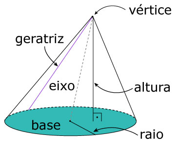
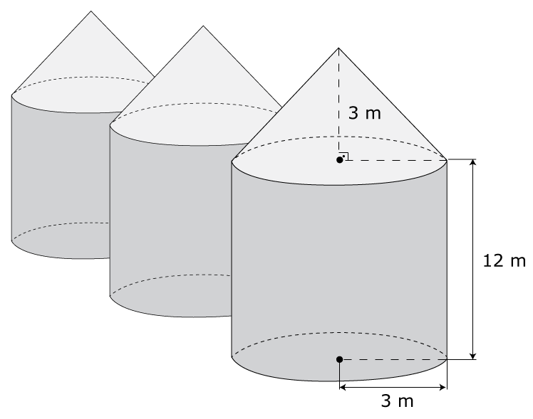

Na geometria plana, um círculo é o conjunto de pontos cuja distância a um determinado ponto C, chamado de centro, é menor ou igual a um valor r, chamado de raio. Podemos associar a um círculo vários elementos a nossa volta. Deixe marcadas a seguir apenas as imagens que possuem círculos.
Observe que círculo não é sinônimo de circunferência. Num plano, uma circunferência é o
O espaço que um círculo ocupa no plano é a sua área e depende apenas da medida do seu raio. A área e o perímetro de um círculo de raio r são dados por
A circunferência, por ser uma curva, possui comprimento.
Questão 1. Na figura, os dois círculos são concêntricos e possuem raios de medidas r e 2r. Eles determinam duas regiões: uma em azul, de área $S_1$, e outra em verde, de área $S_2$. Determine a relação entre as áreas $S_1$ e $S_2$.
|
A $S_1=S_2$B $S_1=2.S_2$C $S_1=3.S_2$D $S_1=\frac{3}{2}.S_2$E $S_1=\frac{4}{3}.S_2$ |
Muito bem! Gostaria de ver a resolução que preparamos?
A região em azul desse exercício é chamada Coroa Circular. Se R é seu raio externo e r é seu raio interno, então sua área é dada por:
Na geometria espacial, chamamos de cilindro, o sólido formado pelos segmentos cujas extremidades estão em dois círculos paralelos, congruentes e não coplanares. A distância h entre os dois círculos é chamada altura do cilindro e os círculos são geralmente chamados de bases do cilindro. O raio do cilindro é definido com sendo o raio da base do cilindro.
Elementos do Cilindro:
Para organizar melhor vamos definir alguns termos relacionados aos cilindros.
| Base: Superfícies planas do colindro. Possuem formato circular. Altura: Distância entre as bases. Eixo: Reta que contém os centros das bases. Geratriz: Segmento paralelo ao eixo e com cada uma das extremidades numa borda das bases. Raio: Raio da base. Ou distância entre o eixo e uma geratriz. |
Um cilindro pode ser classificado como reto ou oblíquo.
Cilindro reto: aquele cuja distância entre os centros das bases é igual à sua altura. Ou seja, seu eixo é perpendicular às bases. Na planificação de um cilindro reto a superfície curva se torna um retângulo. Cilindro oblíquo: cilindro cujo eixo não é perpendicular às bases. Na planificação de um clindro oblíquo a superfície curva se torna um paralelogramo.Área lateral e área total
Como dito anteriormente, ao planificar um cilindro a superfície curva se torna um paralelogramo e, no casos dos cilindros retos, um retângulo. A altura desse paralelogramo tem a mesma medida da altura do cilindro. E a largura do paralelogramo é igual ao perímetro da base do cilindro. Dessa forma, a área dessa superfície curva, que chamamos de área lateral do cilindro, é dada por
A área total da superfície de um cilindro é a soma de sua área lateral com as áreas das bases. Assim, temos que
Atenção para as unidades de medida da altura e do raio! E atenção para não confundir raio com diâmetro!
Volume do Cilindro:
A fórmula para se calcular o volume de um cilindro é muito parecida com a fórmula para o volume de prismas. Porém, no caso dos cilindros, a área da base é a área de um círculo.
Com base em tudo o que foi exposto, resolva a seguinte questão do ENEM 2020:
Questão 2 (ENEM 2020). Uma loja de materiais de construção vende dois tipos de caixas-d’água: tipo A e tipo B. Ambas têm formato cilíndrico e possuem o mesmo volume, e a altura da caixa-d’água do tipo B é igual a 25% da altura da caixa-d’água do tipo A. Se R denota o raio da caixa-d’água do tipo A, então o raio da caixa-d’água do tipo B é
Muito bem! Gostaria de ver a resolução que preparamos?
Você pode usar essa aplicação do geogebra para verificar o que acontece com o volume de um cilindro quando: reduzimos sua altura para $\frac{1}{4}$ de sua medida e duplicamos o seu raio; ou dobramos o raio e mantemos a altura.
Autora: Júlia
Casquinhas de sorvete, funis, cones de trânsito, telhados de castelos e igrejas, árvores de natal, chapéus de festa, pontas de lápis, de brocas e de parafusos são alguns dos exemplos de objetos e elementos que possuem formato de cone. Esse sólido geométrico é formado por uma base circular e os segmentos com extremidades na base e num ponto externo chamado vértice. Os cones podem ser classificados como retos ou oblíquos, assim como os cilindros.
Os cones retos são aqueles cujo segmento que liga o vértice ao centro da base é perpendicular à base. São sólidos gerados pela rotação completa de um triangulo retângulo em torno de um de seus catetos.
Os cones oblíquos são aqueles que não são retos. Eles não são sólidos de rotação.

O conjunto das geratrizes do cone forma sua superfície curva. Quando planificada ela se torna um setor circular de raio g e cujo arco tem a mesma medida que o perímetro da base do cone.
Usando uma regra de três simples e direta podemos determinar a área dessa superfície curva. A área do círculo de raio g está para seu perímetro, assim como a área do setor está para seu arco. Observe:
$\frac{\pi {{g}^{2}}}{2\pi g}=\frac{A}{2\pi r}\Rightarrow \frac{\cancel{\pi }{{g}^{\cancel{2}}}}{\bcancel{2}\cancel{\pi }\cancel{g}}=\frac{A}{\bcancel{2}\pi r}\Rightarrow A=\pi rg$
Assim, temos que
A área total do cone é a soma de sua área lateral com a área da base, e por isso podemos escrever:
Imagine a seguinte situação:
Esse filtro de papel é formado dobrando um semicírculo ao meio. Se, ao "passar" (filtrar) um café, o coador estiver entupido, qual a quantidade máxima de água (e café), em litros, que esse filtro conseguirá segurar? Quais informações precisaremos para resolver esse problema?
Esse papel é a face lateral de um cone. Conhecendo seu raio (geratriz) e ângulo central (180°), podemos encontrar o comprimento do arco, e então poderemos calcular o raio da base do cilindro. Depois, usando o Teorema de Pitágoras encontraremos a altura do cone. E assim teremos todas as informações para calcular sua capacidade.
Usando o
Agora é a sua vez! Voltando ao problema do filtro, a quantidade de água, em mililitros, que esse filtro suporta é, no máximo, aproximadamente : ml. Use um número inteiro para dar a resposta.
A seguinte questão, do ENEM 2016, também é um bom exercício de fixação.
Questão 3 (ENEM 2016) Em regiões agrícolas, é comum a presença de silos para armazenamento e secagem da produção de grãos, no formato de um cilindro reto, sobreposto por um cone, e dimensões indicadas na figura. O silo fica cheio e o transporte dos grãos é feito em caminhões de carga cuja capacidade é de 20 m³. Uma região possui um silo cheio e apenas um caminhão para transportar os grãos para a usina de beneficiamento.  Utilize 3 como aproximação para $\pi$. O número mínimo de viagens que o caminhão precisará fazer para transportar todo o volume de grãos armazenados no silo é
Muito bem! Gostaria de ver a resolução que preparamos?
Quando seccionamos um cone por um plano paralelo à sua base formamos dois sólidos: um cone que contém o vértice do cone original e um sólido chamado Tronco de Cone. Para calcular o volume de um tronco de cone, basta considerar o volume do cone original e subtrair dele o volume do cone menor. Os dois cones são semelhantes, então lembre-se:
Questão 4 (ENEM 2013) Uma cozinheira, especialista em fazer bolos, utiliza uma forma no formato representado na figura: Nela identifica-se a representação de duas figuras geométricas tridimensionais. Essas figuras são
As formas de bolo têm esse formato para diminuir o tempo de cozimento, para que no final o bolo tenha uma maior altura e para que seja mais fácil o desenformar.
Na Geometria Espacial, chamamos de esfera o sólido formado por todos os pontos que estão a no máximo uma distância R (o raio) de um ponto C (o centro).
Uma esfera também é um sólido de rotação, como o cilindro reto e o cone reto. Ao girar um circulo 180° em torno de seu eixo central obtemos uma esfera.
Antes de estudarmos as partes e elementos de uma esfera vamos entender como calculamos seu volume e sua área superficial.
Na aplicação a seguir, temos três sólidos de mesma altura: um cilindro, um cone "de duas folhas", ou seja, com um outro cone em cima, e uma esfera. Na verdade, para a esfera o que chamamos de altura aqui é seu diâmetro. Usando o ponto interior ao cilindro, você pode mover o plano azul. Abaixo vai aparecer as seções e suas áreas. Você consegue observar o padrão nas áreas?
Autor: Brad Ballinger
Observe também que os raios do cilindro, da base dos cones e da esfera são iguais a 1. Caso não tenha notado, a área da secção do cilindro é igual à soma das áreas das seções do cone e da esfera. Inclusive, se você clicar em "Show Details" você poderá ver o uso do Teorema de Pitágoras para mostrar as relações entre as áreas.
Usando essa relação, pelo princípio de Cavalieri, podemos concluir que:
Você já deve ter visto nas aulas de geografia as
Observe o que acontece quando movemos um país para próximo da linha do equador ou em direção aos pólos.
Por conta dessa limitação, não podemos encontrar a área superficial de uma esfera usando uma planificação. Mas podemos usar algumas técnicas para calcular com exatidão essa área, só que esse não é nosso objetivo agora. Nesse
Antes de seguir vamos lembrar dessa cena do MasterChef Brasil 2015:
Ignorando o fato de que a melancia da Jiang tem duas metades e mais uma sobra (Matematicamente impossível), vamos usar uma melancia e seus cortes para entender as partes de uma esfera. Vamos com calma!
Quanto rotacionamos um semicírculo em torno do seu eixo por um ângulo $\alpha$ menor que 360° obtemos uma cunha esférica. A cunha esférica é o formato de uma fatia padrão de melancia.
O volume de uma cunha é proporcional à medida do ângulo $\alpha$, em graus. Assim:
O fuso é a superfície curva de uma cunha esférica. É a casca de uma fatia de melancia.
A área de um fuso é proporcional à medida do ângulo $\alpha,$ em graus. Assim:
Uma calota é cada uma das a partes da esfera quando cortada por um plano. Observe no vídeo essa forma estranha de cortar uma melancia. Se a melancia fosse uma esfera, cada uma das partes seria uma calota.
Uma zona é a região da esfera entre duas seções paralelas.
Um hemisfério é uma calota fomada quando um plano secciona a esfera passando pelo seu centro.
Agora que vimos os principais corpos redondos, suas partes, volume e área superficial, chegamos ao fim dessa atividade. Espero que tenha sido um tempo de muita aprendizagem. Caso tenha alguma dúvida, mande uma mensagem!